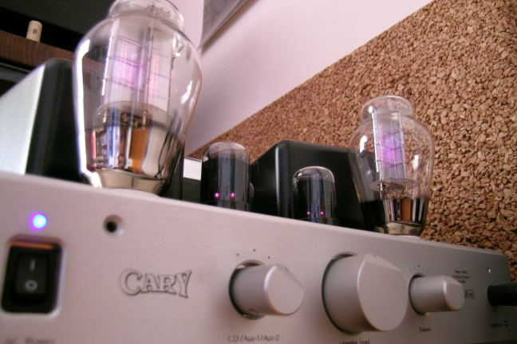
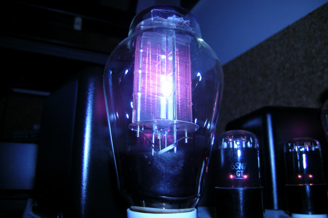

Listening the Cary 300B SEi
Dear audiophile friends,
here comes the report of a long awaited experience, that is to listen a -good- 300B amp in my own system.

The amp borrowed form a friend is the CARY 300B SEi, which is a classic implementation of the 300B single ended integrated amp, having also an input switch and a volume control. This is not the standard version but it is the top one, with best coupling capacitors and silver internal wiring. Most important, the owner replaced the original tubes with very good ones: the signal tubes are blackened NOS Tung-Sol 6SN7, while the queens are Audio Sophia 300B. Even if this is an integrated amp I have preferred using it like a power amp, that it using my CJ pre output to fed its input. In fact, my front hand had a too high gain for the Cary input and I hate dealing with the volume control at its minimum (turned anticlockwise). I have used the 4 Ohm output transformer tap, because the Adagio have mainly 5 Ohm and I didn't want to deteriorate the damping factor.Unfortunately, my listening test was not the best possible, since during the period that I had the Cary available at home I also managed to upgrade my Adagio speakers (see its description), so that I had that big change in my system just together with the Cary amp. Also, I was listening this amp using the owner speakers cables, which are two very good Faber handmade, instead of my usual old TaraLabs RSC. The Faber are much more open and transparent than mine!

So, how it sounded with my -new- Adagio? Well, it is easier to say that it does not sound as I have expected, that is smooth, with booming bass and low dynamic. The 15 declared Watts were even too much for my medium sized room and I can't believe how strong was the timpani together with the orchestra pieno toward the end of the Mercury Firebird! I didn't believe it. It also was very detailed, with the high and midrange frequencies really “rich”.In fact, if I really have to find a limit to this amp, I would say that it is embellishing the music, that is, it becomes too much sweet, sometimes even a little “slow” and “fat” (mind that I like fat!). Moreover, using it without my CJ pre the sound was a little harsh, with less control on the bass response. Instead, using it as a power amp was a real pleasure and the only reason why I will never buy something like that is because its heat (in particular of the output transformers): I have listened it in July, having 38 C outdoor and my air conditioner at maximum in my living room, just to survive!
P.S. My friend uses it only as headphone amp: should I kill him?
Tino © August 2007